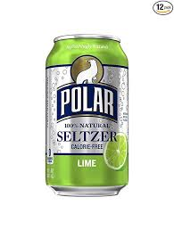

Tristan's Favorite Things
Seltzer Water
It is essentially carbonated water, and there are many flavors to choose from. It taste better, and is not unhealthy.
more information
Clemson Football
Although Covid-19 has messed with the scheduel, the season will still continue. The first game is next Saturday.
more informationCross Country
Cross country is a sport which involves runnig for long distances as fast as you can. The distance of each race may vary, but 3.1 miles is the most common.
more information
Track and Field
Track and Field involves running like Cross Country, but the distances people run are much less and more varied. Track races usually range from 100 meters to 2 miles.
more information
Ultimate Frisbee
Ultimate Frisbee is a game in which 2 teams attempt to catch a Frisbee in the other team's endzone. People cannot move when they have the frisbee, and the other team gets the frisbee if it is dropped or intercepted by the opponet.
more information
Tic Tacs
They are usually pill shaped with a minty taste, but other flavors exist. They are supposed to be breath mints, but they are more like candy.
more information
Phone
It can be used to call and text people, but it also serves as a handheld computer. It can easily access the internet, play games, take photos, and much more.